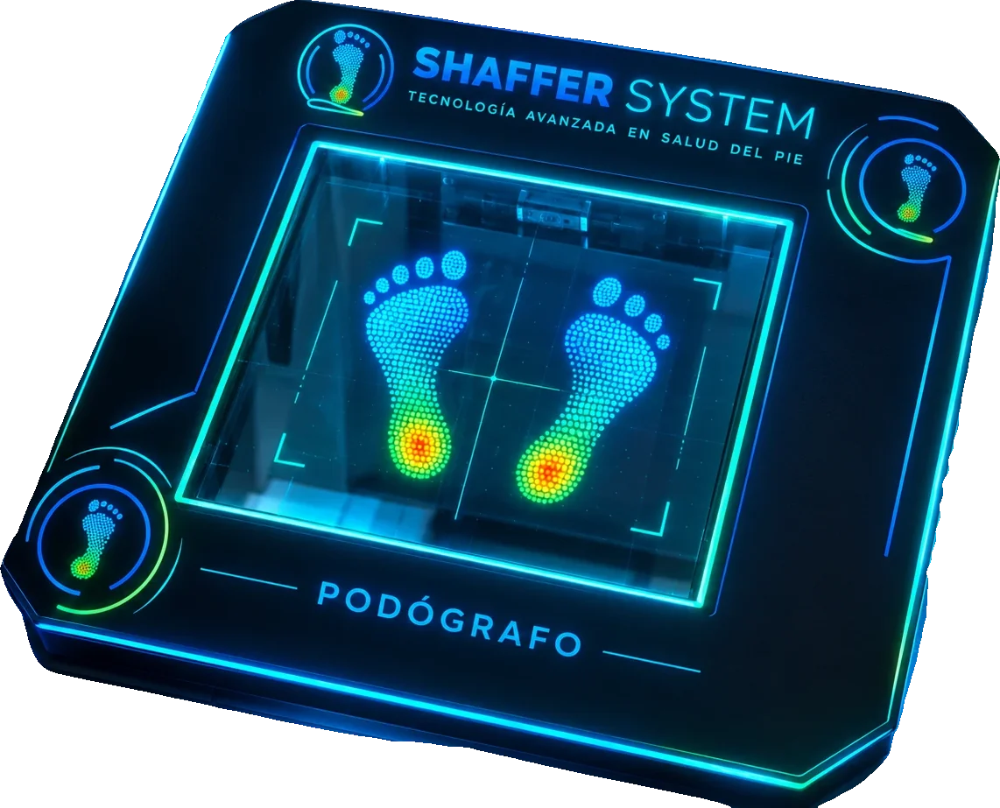
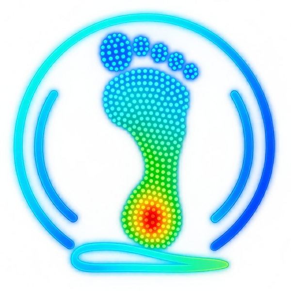
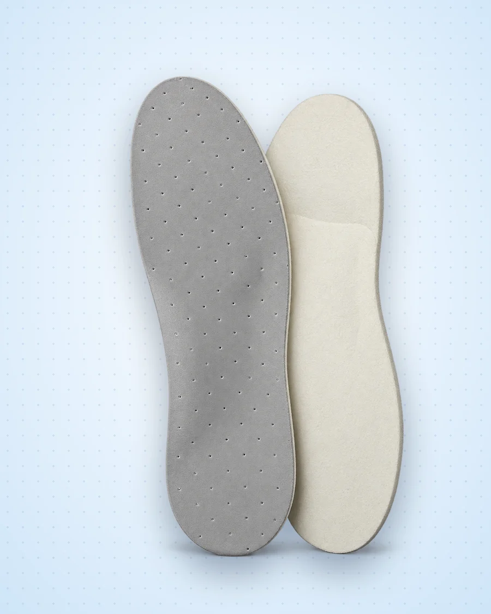
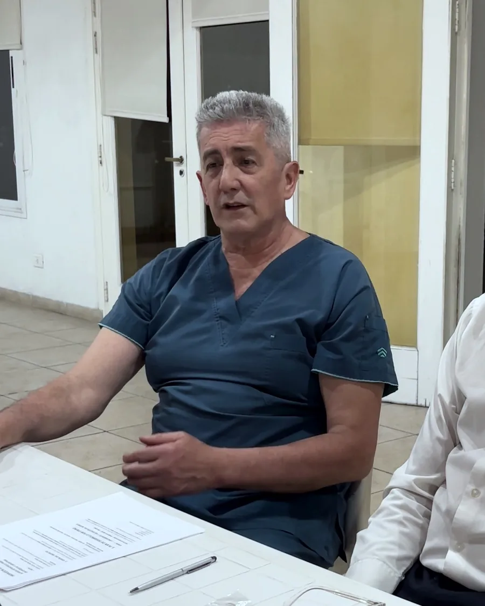
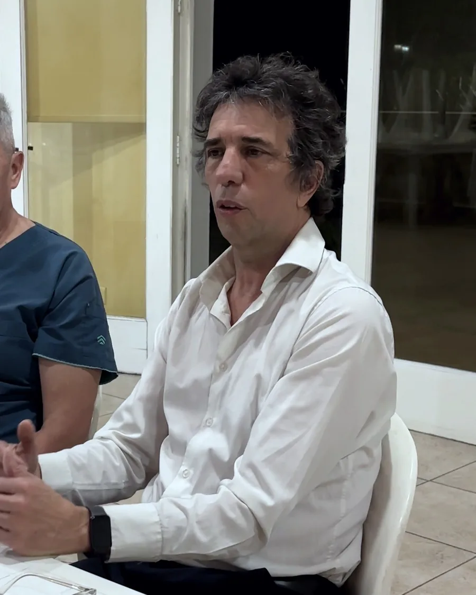

Para profesionales de la salud del pie
El estudio de la pisada, en tu consultorio.
Te damos el podógrafo digital en comodato. Vos hacés el estudio durante la consulta; nosotros fabricamos la plantilla y te la entregamos.
- Traumatología
- Kinesiología
- Podología
- Fisiatría
- Medicina del deporte
- Centros de rehabilitación
- Ortopedias

Diseño de referenciaCómo funciona
Vos medís. Nosotros fabricamos.
-
1
Recibís el podógrafo
Lo instalamos en tu consultorio en comodato: el equipo es nuestro, vos lo usás.
-
2
Hacés el estudio
El paciente se para sobre la plataforma y ves la presión de cada zona del pie.
-
3
Nos derivás la plantilla
Nos mandás el registro y tu indicación. El paciente sigue siendo tuyo.
-
4
Fabricamos y entregamos
Hacemos la plantilla con ese estudio, con espumas propias, y te la entregamos en mano.

- Antepiépresión baja
- Mediopiéel arco casi no apoya
- Talónpresión alta
El podógrafo digital
Cada pisada es un dato.
El podógrafo no saca una foto del pie: mide la presión punto por punto. Ves qué zona carga de más y cuál no apoya, y con eso indicás la plantilla.
- No es invasivo. El paciente se para sobre la plataforma unos segundos.
- Queda registrado. El estudio respalda tu indicación y es la base de la plantilla.
- Te capacitamos. Te mostramos cómo usarlo a vos y a tu equipo.
Fabricación propia
Estamos en cada eslabón: de la espuma a la entrega.
Fabricamos nuestras propias espumas y nuestras plantillas. No tercerizamos: la plantilla que indicás se hace acá, con el estudio de tu paciente.
Fernando Masso, al frente de la fabricación, es representante de Plastazote, la espuma de referencia en plantillas ortopédicas.

El respaldo
Detrás de cada plantilla, un criterio médico.


“No venimos a entregar equipos. Venimos a brindar experiencias.” — Fernando Masso
Pedí tu podógrafo
¿Querés el estudio de la pisada en tu consultorio?
Dejanos tus datos y te contamos las condiciones del comodato por WhatsApp.
- WhatsApp11 6638-4242
- Dónde estamosHaedo, Buenos Aires
Este formulario es para profesionales de la salud. ¿Sos paciente? Pedí tu turno en Studio de la Pisada.